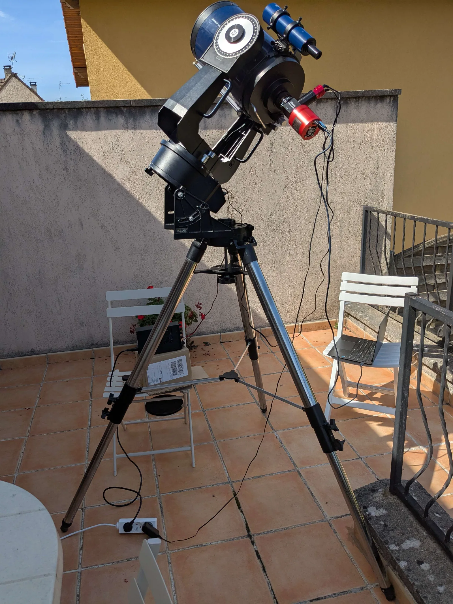
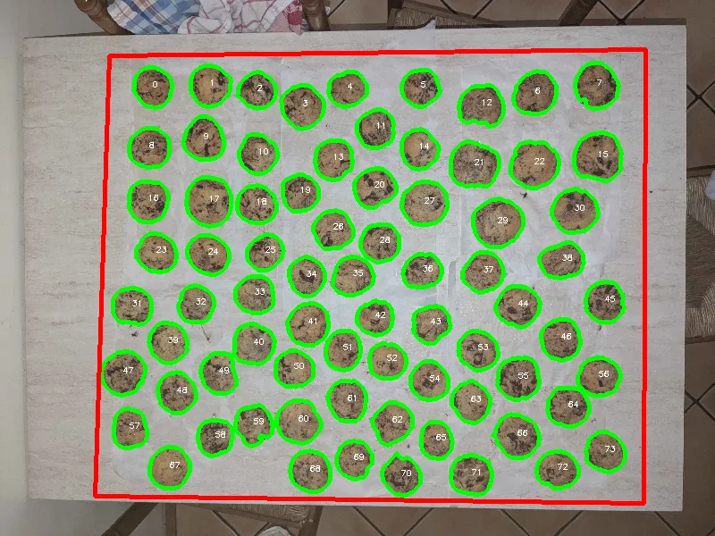

Rémi Mazhar
Physics and engineering student, space sciences
I'm a student at École Polytechnique specializing in space sciences, with interests ranging from plasma physics and astrophysics to robotics. I combine a solid theoretical background in physics and mathematics with strong programming skills in Python and C++ and hands-on experience in CAD, 3D printing, and CNC machining. I've designed assistive devices, built experimental robots, and developed control systems for rocket engines. I enjoy tackling complex problems through both careful analysis and rigorous testing.
- Based in
- Paris, France
- Studying at
- École Polytechnique
- Résumé
- Download PDF
- GitHub
- github.com/RemiMazhar
Projects
-
Video
French Robotics Cup 2027
Leading a team of 15 to build a fully autonomous robot that builds a cardboard castle in a 100-second match.
- Project management
- Autonomous robotics
- Match strategy
-

Restored Computerized Telescope Mount
New electronics for a 30-year-old computerized telescope mount, tracking the sky with arcsecond precision.
- Electronics
- Embedded systems
- RP2040 microcontroller
-
Video
Liquid Propellant Rocket Engine
Test bench, pneumatics and remote-control electronics for a student liquid-propellant rocket engine.
- CAD (Fusion 360)
- 3D Printing
- Laser cutting
-
Video
Tattoo Robot
A tattoo robot built from scratch, with Tripteron kinematics and laser mapping of the skin.
- Python
- Raspberry Pi
- OpenGL
-
Video
Polyarticulated Bio-Inspired Climbing Robot
A robot that climbs poles of almost any shape using three 3D-printed TPU tentacles.
- Mechanical Design
- Robotics
- CAD
-
Video
Ultra-Compact Star Tracker
A backpack-sized star tracker built on a 50€ budget, with about 20 arcseconds of tracking precision.
- Arduino
- CAD (Fusion 360)
- 3D Printing
-

Cookie Analysis Software
A computer vision tool that measures cookies from a photo and generates statistical reports.
- Computer Vision
- OpenCV
- Segmentation
-
Video
Mandelbrot Set Explorer
A GPU-accelerated program for exploring the Mandelbrot set and rendering deep zoom videos.
- C++
- CUDA
- OpenGL
-
Video
Computer Science and Robotics Club
A high-school club of 10 students building robots, with machines lent by a local FabLab.
- Arduino
- CAD (Fusion 360)
- 3D Printing
About
Experience
- Research Project, Laboratoire de Physique des Plasmas (LPP), PalaiseauSep 2026 – PresentInvestigating how to stabilize breathing-mode oscillations in a Hall-effect thruster by modulating the magnetic field. Measured the inductive coupling between the coil current and the discharge current.
- R&D Intern, Airbus Defence & Space, MunichJun 2026 – Sep 2026Characterized measurement artifacts in infrared CMOS sensors for Earth-observation satellites, including effects that the usual calibration fails to correct. Automated a remotely controlled optical test bench (LabVIEW), modeled a sensor bias that depends on integration time, and developed a correction algorithm for it.
- Physics Oral Examiner, Lycée Blaise Pascal, OrsaySep 2025 – Jun 2026Weekly oral examinations for undergraduate students in STEM preparatory classes.
- Engineering Intern, CMRRF Kerpape rehabilitation center, LorientSep 2024 – Apr 2025Designed and fabricated 50+ custom assistive devices using CAD, 3D printing and CNC machining.
- Private Mathematics Tutor, FreelanceSep 2024 – Jun 2025
Education
- École Polytechnique, Engineer's degree (equivalent to Master of Science)Sep 2024 – Aug 2028 (expected)Third-year specialization in Space Sciences & Challenges. Coursework includes plasma physics, advanced quantum physics, stellar astrophysics and compressible fluid dynamics.
- Lycée Blaise Pascal, Intensive post-secondary foundation in STEM (CPGE)Sep 2022 – Jul 2024Two-year program in mathematics and physics (MP) preparing for the national competitive exams.
Technical expertise
- Programming languages: Python, C++, CUDA, LabVIEW, Igor Pro, competitive programming
- Computer science and libraries: NumPy, SciPy, Pandas, OpenCV, TensorFlow, computer vision, computer graphics, Linux
- Embedded systems and hardware: Arduino, Raspberry Pi, PCB design, sensors and signal processing, detector calibration, data acquisition automation, optical test benches, IMU sensors, pressure sensors, temperature sensors, strain gauges
- Manufacturing and design: CAD (Fusion 360), 3D printing, CNC machining, laser cutting, 3D scanning, mechanical integration, multi-material assembly
- Languages: French (native), English (C1)
Awards
- Ranked 10th nationwide in Prologin 2026, a programming competition with thousands of participants
- Ranked 11th nationwide in Prologin 2025
- Electromaker of the Month award for high-school robotics project